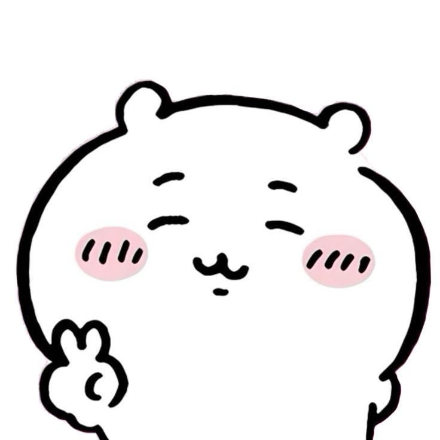

¿Quién es Chiikawa?
Chiikawa es un pequeño ser blanco, redondito y extremadamente adorable creado por la mangaka Nagano. Su nombre combina las palabras “chii” (pequeño) y “kawa” (de kawaii, que significa lindo). Nadie sabe con exactitud qué animal es… y justo esa misteriosa ternura es parte de su encanto.

El protagoniste más tierno del mundo
✨ Su personalidad
Chiikawa es un personaje muy sensible y emocional. Se asusta con facilidad, llora cuando las cosas no salen como esperaba y a veces siente que el mundo es demasiado grande para él. Sin embargo, también es muy perseverante: aunque falle varias veces, siempre vuelve a intentarlo. Esa mezcla de vulnerabilidad y valentía es lo que hace que tantos fans se enamoren de él.
Sensible
Siente todo con mucha intensidad
Persistente
No se rinde fácilmente
Dulce
Tiene un corazón enorme
Miedoso
Todo le parece un poco aterrador
💗 Lo que más le gusta
- Comer comida rica, especialmente si está caliente o es dulce. Cuando come se pone muy feliz.
- Pasar tiempo con sus dos mejores amigos: Hachiware y Usagi.
- Descansar después de un día de trabajo (aunque el trabajo sea simple, se cansa mucho).
- Recibir apoyo y palabras de ánimo cuando se siente inseguro.
Curiosidades y Aventuras
Aunque Chiikawa es pequeño y asustadizo, su vida está llena de pequeñas aventuras cotidianas. Desde intentar aprobar exámenes hasta salir a “cazar bichos”, cada día es un nuevo desafío que enfrenta con miedo… pero también con mucho esfuerzo.
Nació en Twitter
Empezó como simples viñetas en 2020 y se volvió viral muy rápido.
Su trabajo
Se dedica a recoger hierbas. Es un trabajo sencillo, pero para él es agotador.
El examen
Necesitó tres intentos para aprobar el examen de hierbas de grado 5.
Tiene casa
Ganó su propia casita en un sorteo de yogur. ¡Qué suerte tuvo!
Sus amigos
Hachiware (optimista) y Usagi (hiperactivo) siempre lo acompañan.
Anime
En 2022 estrenó su propia serie animada corta y fue un éxito.

Chiikawa + Hachiware + Usagi = amistad eterna
🌟 Sus aventuras más características
- Intentar superar exámenes aunque le den mucho miedo y se ponga a llorar.
- Salir a cazar bichos con sus amigos (aunque casi siempre termina asustado).
- Descubrir comida deliciosa y compartirla con Hachiware y Usagi.
- Enfrentarse a situaciones nuevas que lo superan… pero nunca se rinde del todo.
¿Cómo habla Chiikawa?
Una de las cosas más especiales de Chiikawa es su forma de comunicarse. Casi no usa palabras normales. En su lugar, se expresa con sonidos cortos, gestos y expresiones faciales. Aun así, todos lo entienden perfectamente.
• “Yaha” — Lo usa cuando está contento, sorprendido o un poco emocionado.
• “Uwaa” — Aparece cuando se asusta o cuando algo le impacta mucho.
• “Iya” / “Yada” — Es su forma de decir “no” o “no quiero”.
• “Uu…” — Lo dice cuando está triste, cansado o a punto de llorar.

Aunque hable poco, se entiende todo lo que siente
💌 Lo más bonito de su forma de hablar
Chiikawa nos recuerda que no siempre hacen falta muchas palabras para expresar lo que sentimos. Con solo un “uwaa”, un “yaha” o una carita triste, sus amigos (y nosotros) ya sabemos exactamente cómo se encuentra. Esa es una de las razones por las que resulta tan entrañable.